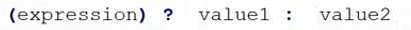
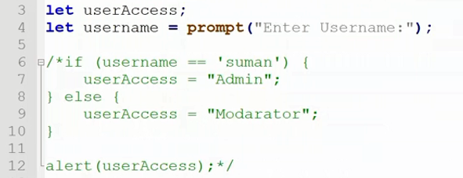
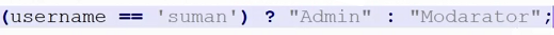
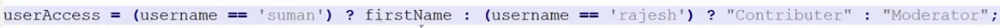

>>> working progress <<<
ternary operator মুলত if _ Else এর কাজ অনেক শর্টকাটে করে ।
structure of Ternary Operator:-

এখানে structure এর
expression এর জায়গায় if এর condition অর্থাৎ যেটা check করতে চাইছি সেটা দিতে হবে ।
আর value1 এর জায়গায় দিতে হয় if এর মেইন বা প্রথম result টা ।
আর value2 তে দিতে হয় else বা দ্বিতীয় result টা ।
জেমনঃ-
এটা একটা if _ else statemant

এটা if _ else statemant কে ternary এর নিয়মে লিখা রুপ ।

ternary operator এর presidance সব থেকে কম তাই
ternary operator এ প্রথমে first braket এ থাকা condition টার কাজ হবে আর condition এর ভেতরে যেহেতু এখন comparison operator আছে সেটার কাজ সবার আগে হবে এবং এখানে check হবে যে condition টা true কিনা । এবং এই ternary operator এখানে true বা false পাবে ।
তারপর
true পেলে value1 retrun করবে ।
আর false পেলে value2 retrun করবে । এবং প্রয়োজনে ternary operator এর retrun করা value টা কোন ভারিএবলে store করতে পারব এবং ইত্যাদি । value এর মধ্যে চাইলেই (string,number,variable,true_false & etc ) .
ternary operator এর if _ else এর সাথে চাইলে
else _ if ও ব্যেবহার করতে পারি
জেমনঃ-

কিন্তু এমনটা করা ঠিক না , else এর মধ্যে যদি else if condition অ্যাড করার দরকার পরে তবে ternary এর পরিবর্তে ef _ else ব্যেবহার করাই ভাল ।
তবে এটার একটা উদাহরন
js line:-3 দেওয়া আছে ।